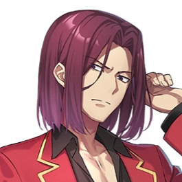
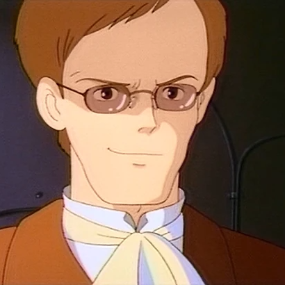

診断結果
あなたは「DQN系中二病」です。
特徴
- 反社会的で危険な事柄を「かっこいい」と思い込む。
- 無意味に悪ぶったり、法律やルールを無視することで自己を際立たせようとする。
- 言葉遣いが荒くなり、「オレは普通のやつらとは違うんだ」などと言いがち。
日常生活でのアドバイス
- 自分を強く見せたい気持ちの裏には自己肯定感の低下があるかもしれません。まずは自分自身を客観的に見つめ直すことが大切です。
- 無理に強さを育てるのではなく、自分の弱さや不安を認め、それを受け入れることが自己肯定感を回復する第一歩となります。
- 小さな成功体験を重ね、自分の価値を強さ以外に見い出すことが大切です。
- 加害行為を良しとする価値観は、他人に不安感を感じさせます。日常生活ではそのような衝動を抑え、相手の気持ちを考えた行動が大切です。
DQN系中二病が憧れるキャラクター
-  クラスを信頼ではなく、恐怖で支配する独裁者。その卑劣漢ぶりゆえに、周りから異質な存在として見られている。中学時代は不良として有名人で、高校入学後も暴力に躊躇のないその姿勢は変わっていない。
- 十二大戦第一話
-
 天才的な戦闘センスの持ち主で、バンジーガムとドッキリテクスチャーといういたってシンプルな念能力を使い、戦闘を楽しんでいる。戦闘狂ながらも頭の回転も非常に早く、機転が効く。狩る対象として、様々な人物を「玩具(オモチャ)」と捉えている。
天才的な戦闘センスの持ち主で、バンジーガムとドッキリテクスチャーといういたってシンプルな念能力を使い、戦闘を楽しんでいる。戦闘狂ながらも頭の回転も非常に早く、機転が効く。狩る対象として、様々な人物を「玩具(オモチャ)」と捉えている。
-  ラピュタの力を自らの手中に収め、新たなラピュタ王として全世界に君臨することに強い野心を燃やす。ムスカは当初手荒な真似は控え紳士的な態度を見せたが、その本性は己の目的のためには手段を選ばず、平然と味方を裏切り、他人の命すらも平気で奪うなど極めて冷酷非情な性格である。
- 暗殺教室第一話
龍園翔（よう実）
憂城（十二大戦）
 十二大戦に参戦する「卯」の戦士。モットーは『異常に殺す』。彼の能力はネクロマンチストであり、殺した相手をお友達として使役することが出来る。大戦にかける願いは「お友達が欲しい」で、世界中のみんなとお友達になることを望んでいる。圧倒的な実力で他の参加者を圧倒している。
十二大戦に参戦する「卯」の戦士。モットーは『異常に殺す』。彼の能力はネクロマンチストであり、殺した相手をお友達として使役することが出来る。大戦にかける願いは「お友達が欲しい」で、世界中のみんなとお友達になることを望んでいる。圧倒的な実力で他の参加者を圧倒している。
ヒソカ=モロウ（HUNTER×HUNTER）
ムスカ（天空の城ラピュタ）
赤羽業（暗殺教室）
 喧嘩はかなり強く、さらに凶器や騙し討ちの「基礎」に関してはE組の中でも群を抜いている。生徒内で殺せんせーに初めてダメージを与えたのも彼である。喧嘩の絶えない日々を送ってきた関係から、野性的な警戒心を持っている。流行らせたい新しい病気は「中三病」。
喧嘩はかなり強く、さらに凶器や騙し討ちの「基礎」に関してはE組の中でも群を抜いている。生徒内で殺せんせーに初めてダメージを与えたのも彼である。喧嘩の絶えない日々を送ってきた関係から、野性的な警戒心を持っている。流行らせたい新しい病気は「中三病」。